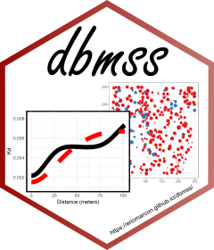

marks method for Dtable and wmppp objects
marks.RdS3 methods for the marks generic.
Arguments
- x
A
Dtableorwmppp.objectobject.- ...
Extra arguments, currently unused.
- value
The value to set.
- dfok
Ignored.
- drop
Ignored.
Details
These functions extract or modify the marks of a Dtable.
`marks<-.wmppp()` just calls `marks<-.ppp()` and keeps the class of the wmppp object. The conformity of the marks with the definition of the class "wmppp", i.e. a dataframe with columns "PointType" and "PointWeight" of the same length as the number of points, is not checked.